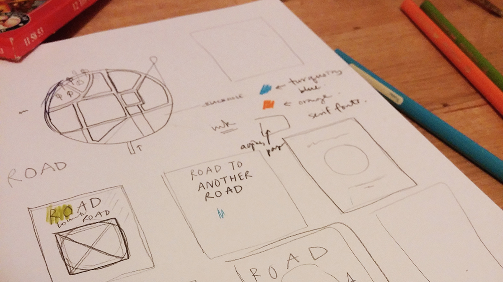

Be an artist, now
Q: Why be an artist? A: Will being an artist help advance my career? Will I make money by being one? If not, I don’t have time to be an artist, I’m extremely busy.
If this is your response, then you need to listen to this TED talk by Young-ha Kim, a Korean post-modern writer who urges everyone to be an artist right now. There are English subtitles in this video.
If you don’t have the time to watch the video (although I strongly recommend that you watch it), here are three questions and answers which basically sums up his talk.
Q1: Why be an artist? Because doing art makes you happy and it helps express yourself.
Q2: What are you going to do with it? A: It doesn’t matter, you engage in artistic pursuits because it makes you happy.
Q3: Who should be artists? A: Everybody. Everybody is born as an artist. Their inner artists are suppressed and needs to be released.
Art is not done to achieve some hidden ulterior motive. Art itself is the ultimate goal and the destination – to express yourself through a medium.
Young-ha Kim says that he’s asked his students in the past about what their happiest recollections were, For many of them their happiest moments were when they pursuing an artistic activity. They were either playing chopsticks on piano with their friends, or fiddling around with their analogue camera. Activities which had the sole purpose of entertainment, amusement and expressing themselves.
When I think about my happiest memory, it wasn’t when I got an award for my academic achievements. My happiest day for me was the launch night of my art exhibition showcasing my illustrations. I was extremely proud of my illustration and happy to be displaying it in public. To be honest, they don’t demonstrate some masterful artistic talent, but they are my honest thoughts expressed in a visual form.
In this digital age, there are alternative and easy ways to express yourself – facebook, instagram, twitter… However I don’t think it’s as fulfilling as a dedicating yourself to pursue an artistic activity. Instead of posting two or three line statuses on facebook why not write stories or start a blog? Instead of instagram-ing your foods, why not invest in a proper camera and travel for the sole purpose of taking photos?
Even if we don’t pursue art or design as full time professions, we need to release our inner artist through a range of medium - drawing, music, writing, and/or acting. Why? In order to express ourselves, be who we are, and be happy. How? Just do it.